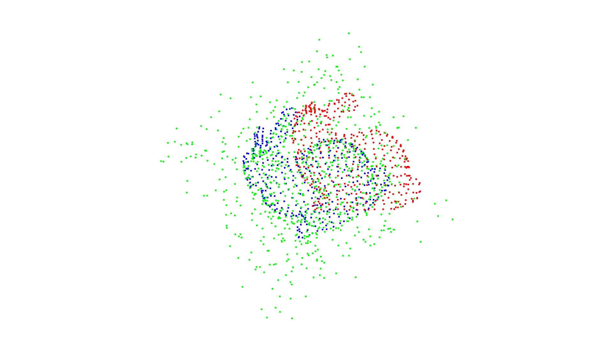
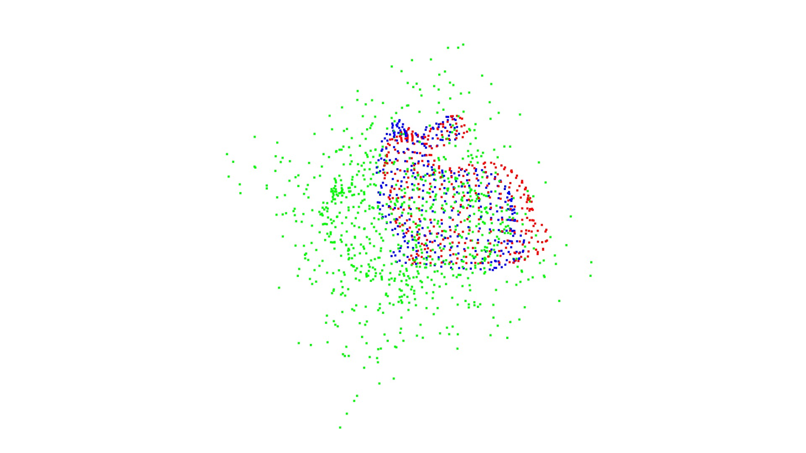
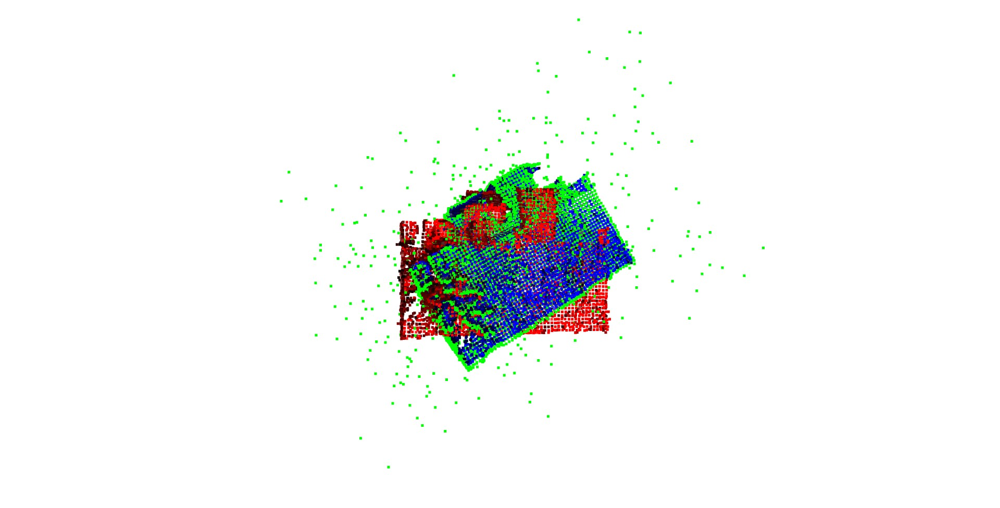
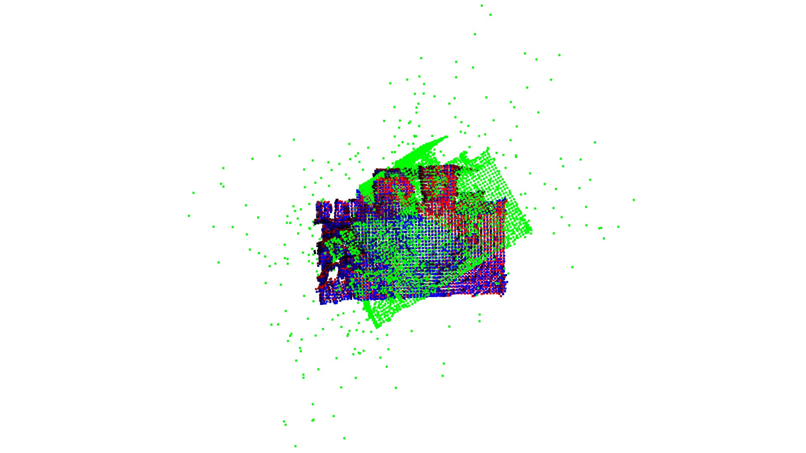

Tutorial: Coherent Point Drift (CPD) Algorithm for Point Set Registration#
In this tutorial, we will explore the Coherent Point Drift (CPD) algorithm for point set registration. We will go through the background, examples and sample experiments. We will also be looking into the comparison of Coherent Point Drift Algorithm with the standard ICP algorithm for point set registration. Let’s start by defining what point set registration is.
Point set registration is a crucial task in computer vision and robotics, involving aligning two or more sets of points from different sources or time instances to find their spatial correspondence. This alignment is fundamental for various applications like 3D reconstruction, object recognition, and medical image analysis. Iterative Closest Point (ICP) and Coherent Point Drift (CPD) are two prominent algorithms in point set registration. ICP iteratively minimizes the distances between corresponding points in the sets, refining the transformation until convergence. CPD, on the other hand, models the transformation as a probability distribution over the point sets, enabling robust registration even in the presence of outliers and noise. While ICP is efficient for rigid registration, CPD extends to non-rigid transformations, offering versatility in aligning deformable structures like biological tissues or articulated objects. Together, these algorithms constitute powerful tools for accurately aligning point sets across various domains.
ICP works by pairing each point in the ‘source’ point cloud (the one which is to be transformed) with the nearest point in the ‘reference’ point cloud (points in the reference cloud can be paired to more than one source cloud point), then estimating the transformation that will most reduce the mean square of the distances between pairs. The points are then re-paired; the process is repeated until the stopping conditions are met.
Coherent point drift (CPD) treats registration as a probability density estimation problem, in which one point cloud is treated as the probability distribution of the centroids of a Gaussian mixture model, and the other as data points drawn from the distribution; registration is then performed by finding the position at which the probability of the data points being observed is maximised. Motion coherence of the centroids is imposed to preserve topological structure. Myronenko and Song (2010) tested CPD on example point clouds and showed it to be more accurate and robust to noise and outliers than ICP.
Background#
Before we dive into the details of CPD, let’s briefly discuss the problem of point set registration and the Iterative Closest Point (ICP) algorithm, which is one of the most widely used methods for point set registration.
Point Set Registration#
Given two sets of points (\(X = {x_1, x_2, ..., x_N}\)) and (\(Y = {y_1, y_2, ..., y_M}\)), the goal of point set registration is to find a transformation (T) such that when applied to (X), the transformed points are aligned as closely as possible to (Y).
Iterative Closest Point (ICP) Algorithm#
ICP is an iterative optimization algorithm commonly used for point set registration. It alternates between two steps:
Correspondence Estimation: Given the current transformation (T), find the correspondence between points in (X) and (Y).
Transformation Estimation: Given the correspondence, estimate the transformation (T) that aligns (X) with (Y).
ICP repeats these steps until convergence.
While ICP is effective, it can be sensitive to noise and outliers, and it may converge to local minima. CPD, on the other hand, addresses some of these limitations by incorporating coherence information and introducing soft correspondences.
Coherent Point Drift (CPD) Algorithm#
The Coherent Point Drift (CPD) algorithm, introduced by Andriy Myronenko and Xubo Song in their paper “Point Set Registration: Coherent Point Drift” (2009) , is a powerful method for point set registration. CPD extends traditional point set registration methods by introducing a probabilistic framework that models the point set correspondences as a Gaussian Mixture Model (GMM). This allows CPD to handle noise, outliers, and partial overlap between point sets more effectively than traditional methods like ICP.
Algorithm Overview#
The CPD algorithm can be summarized in the following steps:
Initialization: Initialize the transformation (T) and the parameters such as translation, rotation, and scaling, which define the initial alignment between the two point sets. We also estimate the covariance matrix and the scaling factor for the Gaussian Mixture Model (GMM) that represents the probability distribution of the transformation.
Expectation Step: Compute the expected correspondence probabilities between points in (X) and (Y) point sets using the GMM and the current transformation parameters and update the weights and means of the GMM based on the current correspondences.
Maximization Step: Update the transformation parameters to maximize the likelihood of the correspondences of the transformation (T). This involves updating the translation, rotation, scaling, and the parameters of the GMM (mean, covariance, and mixture coefficients).
Iteration: Check whether the algorithm has converged by comparing the change in transformation parameters between iterations with a predefined threshold. If convergence criteria are met, exit the algorithm; otherwise, return to step 2.
Output: Once convergence is achieved, the final transformation parameters represent the aligned positions of the source points with respect to the target points.
Now, let’s go through each step of the CPD algorithm in more detail.
Expectation Step#
In the Expectation step, we compute soft correspondences between points in (X) and (Y). This is done by estimating the posterior probability that a point in (X) corresponds to a point in (Y) given the current transformation (T) and the parameters of the GMM. The soft correspondences are computed using Bayes’ theorem:
where:
\((w_{ij})\) is the soft correspondence weight between \((x_i)\) and \((y_j)\).
\((\pi_j)\) is the mixing coefficient of the \((j^{th})\) component of the GMM.
\((\mathcal{N}(y_j | \mu_j, \Sigma_j))\) is the Gaussian distribution representing the \((j^{th})\) component of the GMM.
The denominator is the normalization term ensuring that the weights sum up to 1.
Maximization Step#
In the Maximization step, we update the parameters of the GMM and estimate the transformation (T) that maximizes the likelihood of the soft correspondences. This involves solving an optimization problem to find the optimal transformation and updating the parameters of the GMM using the weighted point correspondences.
Point Cloud Registration with CPD Example Code#
(https://siavashk.github.io/2017/05/14/coherent-point-drift/)#
Let’s start off with a simple toy example. Assume that we have two point clouds ( \(X = { X1, X2, X3 }\) ) and ( \(Y = { Y1, Y2, Y3 }\) ) . These point clouds are shown in Figure 1 with red and blue circles, respectively. Our goal is to find the transformation that best aligns the two point clouds.
In this toy example, the unknown transformation is a rotation around the origin (parameterized by \(\theta\) followed by a translation (parameterized by (t)). Assume, the actual value of the unknown parameters is { \(\theta^{\circ}\), t=(0.2, 0.2) } . We can use numpy to define the two point clouds as seen in the following code snippet:
import numpy as np
# transformation parameters
theta = np.pi/6.0
t = np.array([[0.2], [0.2]])
# rotation matrix
R = np.array([[np.cos(theta), -np.sin(theta)],
[np.sin(theta), np.cos(theta)]])
X = np.array([[0, 0, 10], [0, 10, 0]])
Y = np.dot(R, X) + t
xLabels = ["X1", "X2", "X3"]
yLabels = ["Y1", "Y2", "Y3"]
Plotting the two point clouds results in Figure 1. Now, since this is a toy example, we already know the correspondences between points in the two point clouds. The corresponding points are linked using the black dashed line. If the correspondences are known, the solution to the rigid registration is known as the orthogonal Procrustes problem:

Missing Correspondences#
When correspondence is not explicitly known, point cloud registration algorithms implicitly assume that correspondence can be inferred through point proximity. In other words, points that are spatially close to each other correspond to one another.
We can assign an arbitrary correspondence probability to point clouds based on proximity. Figure 2 shows an example probability distribution based on proximity.
Points that are closer than a radius of (r=0.2) would confident matches, and we would assign a correspondence confidence of (p=1.0) to them. Pairs such as ((X1, Y1)) and ((X2, Y2)) pairs have a distance between (r=0.2) and (r=0.4) units are probable but not confident matches, so we could assign a probability of (p=0.5) to them. Beyond this, there is probably no correspondence, so our probability would drop to zero.
Even though this approach is quite simple, it provides two distinct advantages. First, it allows us to assign correspondences so that we can solve the registration as a Procrustes problem. Furthermore, it also allows us to weigh the loss functional according to the correspondence probability.

Gaussian Mixture Models#
We will now side step from the point cloud registration problem briefly. Instead of dealing with (X, Y) point clouds directly, we construct a GMM from the moving point cloud, (Y), and treat (X) as observations from that GMM. In Figure 3, we have constructed a GMM where the three Gaussians have a variance of 0.75 units. Blue points, i.e. Gaussian centroids, are the transformed moving points ((Y)). Red points, i.e. the fixed point cloud (X), are observations from this GMM. Isocontours represent the log-likelihood that red points are sampled from this GMM.

GMM-based Registration#
In order to perform registration, we have to solve correspondence and moving point cloud transformation problems simultaneously. This is done through expectation-maximization (EM) optimization. To solve the correspondence problem, we need to find which Gaussian the observed point cloud was sampled from (E-step). This provides us with correspondence probability, similar to Figure 2. Once correspondences probabilities are known, we maximize the negative log-likelihood that the observed points were sampled from the GMM with respect to transformation parameters (M-step).
Expectation Step#
In Figure 3, if there was only one Gaussian component in the mixture, then the probability that a point (x) is sampled from this Gaussian is given using probability density distribution of the multivairate normal distribution. For the 2D case, with isotropic Gaussians, this simplifies to:
However, since we are dealing with multiple Gaussians, we need to normalize this probability by the contribution of all Gaussian centroids. In the pycpd package, this is achieved (minor tweaks to simplify the explanation) using the following snippet:
import numpy as np
from collections import namedtuple
EstepResult = namedtuple("EstepResult", ["pt1", "p1", "px", "n_p"])
def expectation_step(self, t_source: np.ndarray, target: np.ndarray, sigma2: float, w: float = 0.0) -> EstepResult:
"""Expectation step for CPD"""
assert t_source.ndim == 2 and target.ndim == 2, "source and target must have 2 dimensions."
pmat = self.distance_module.cdist(t_source, target, "sqeuclidean")
# Probability matrix: pmat{ij} is the probability that moving point i corresponds to fixed point j
# pmat = self.xp.stack([self.xp.sum(self.xp.square(target - ts), axis=1) for ts in t_source])
pmat = self.xp.exp(-pmat / (2.0 * sigma2))
c = (2.0 * np.pi * sigma2) ** (t_source.shape[1] * 0.5)
c *= w / (1.0 - w) * t_source.shape[0] / target.shape[0]
den = self.xp.sum(pmat, axis=0)
den[den == 0] = self.xp.finfo(np.float32).eps
den += c
pmat = self.xp.divide(pmat, den)
pt1 = self.xp.sum(pmat, axis=0)
p1 = self.xp.sum(pmat, axis=1)
px = self.xp.dot(pmat, target)
return EstepResult(pt1, p1, px, np.sum(p1))
Maximization Step#
Once correspondence probabilities are known, i.e. (P), we can solve for the transformation parameters. In the case of rigid registration, these transform parameters are the rotation matrix and the translation vector. In the pycpd package, this is achieved using the following snippet:
import numpy as np
def MStep(X, Y, P, P1, Np):
s, R, t, A, XX = updateTransform(X, Y, P, P1, Np)
sigma2 = updateVariance(R, A, XX, Np, D)
def updateTransform(X, Y, P, P1, Np):
muX = np.divide(np.sum(np.dot(P, X), axis=0), Np)
muY = np.divide(np.sum(np.dot(np.transpose(P), Y), axis=0), Np)
XX = X - np.tile(muX, (N, 1))
YY = Y - np.tile(muY, (M, 1))
A = np.dot(np.transpose(XX), np.transpose(P))
A = np.dot(A, YY)
U, _, V = np.linalg.svd(A, full_matrices=True)
C = np.ones((D, ))
C[D-1] = np.linalg.det(np.dot(U, V))
R = np.dot(np.dot(U, np.diag(C)), V)
YPY = np.dot(np.transpose(P1), np.sum(np.multiply(YY, YY), axis=1))
s = np.trace(np.dot(np.transpose(A), R)) / YPY
t = np.transpose(muX) - s * np.dot(R, np.transpose(muY))
return s, R, t, A, XX
def updateVariance(R, A, XX, Np, D):
trAR = np.trace(np.dot(A, np.transpose(R)))
xPx = np.dot(np.transpose(P1), np.sum(np.multiply(XX, XX), axis =1))
sigma2 = (xPx - s * trAR) / (Np * D)
return sigma2
ICP Algorithm#
Input:
Source point cloud ( A ) with ( N ) points ( \({a}_i\) )
Target point cloud ( B ) with ( N ) points ( \({b}_i\) )
Maximum number of iterations ( \({max iterations}\) )
Convergence criteria tolerance ( \({tolerance}\) )
Output:
Transformation matrix ( T ) that aligns ( A ) to ( B )
Euclidean distances ( \({distances}\) ) of the nearest neighbor
Number of iterations ( i ) to converge
Algorithm:
Initialize: Set ( T ) as an identity matrix.
Iterate: Repeat until convergence or reaching maximum iterations:
Find Correspondences: For each point ( \({a}_i\) ) in ( A ), find its nearest neighbor ( \({b}_j\) ) in ( B ).
Compute Transformation: Calculate the transformation ( T ) that best aligns ( A ) to ( B ) based on the correspondences.
Update Source: Apply the transformation ( T ) to ( A ).
Check Convergence: If the change in mean squared error between consecutive iterations is below the tolerance, break the loop.
Calculate Final Transformation: Calculate the final transformation ( T ) using the best fit transform between the original ( {A} ) and the transformed ( A ).
Return Results: Return ( T ), distances ( \({distances}\) ), and the number of iterations ( i ).
To note:
The transformation ( T ) generally includes a rotation matrix ( R ) and a translation vector ( t ).
The best fit transform can be computed using methods like Singular Value Decomposition (SVD) or Quaternion-based optimization.
ICP is sensitive to initialization, and multiple initial guesses may be required for optimal convergence.
The best_fit_transform function calculates the least-squares best-fit transform that maps corresponding points from one point set to another in m spatial dimensions. Given two sets of corresponding points A and B, it computes the optimal rotation matrix R and translation vector t that minimize the squared Euclidean distance between the transformed points and their corresponding points in the other set. This function is a fundamental building block used in point set registration algorithms like ICP (Iterative Closest Point) and CPD (Coherent Point Drift).
import numpy as np
from sklearn.neighbors import NearestNeighbors
import time
import matplotlib.pyplot as plt
from mpl_toolkits.mplot3d import Axes3D
def best_fit_transform(A, B):
'''
Calculates the least-squares best-fit transform that maps corresponding points A to B in m spatial dimensions
Input:
A: Nxm numpy array of corresponding points
B: Nxm numpy array of corresponding points
Returns:
T: (m+1)x(m+1) homogeneous transformation matrix that maps A on to B
R: mxm rotation matrix
t: mx1 translation vector
'''
assert A.shape == B.shape
# get number of dimensions
m = A.shape[1]
# translate points to their centroids
centroid_A = np.mean(A, axis=0)
centroid_B = np.mean(B, axis=0)
AA = A - centroid_A
BB = B - centroid_B
# rotation matrix
H = np.dot(AA.T, BB)
U, S, Vt = np.linalg.svd(H)
R = np.dot(Vt.T, U.T)
# special reflection case
if np.linalg.det(R) < 0:
Vt[m-1,:] *= -1
R = np.dot(Vt.T, U.T)
# translation
t = centroid_B.T - np.dot(R,centroid_A.T)
# homogeneous transformation
T = np.identity(m+1)
T[:m, :m] = R
T[:m, m] = t
return T, R, t
The nearest_neighbor function finds the nearest (Euclidean) neighbor in a destination point set for each point in a source point set. Given two sets of points, src and dst, it computes the Euclidean distances and indices of the nearest neighbor in the destination set for each point in the source set. This function is commonly used in point set registration algorithms to establish point correspondences between two sets of points.
def nearest_neighbor(src, dst):
'''
Find the nearest (Euclidean) neighbor in dst for each point in src
Input:
src: Nxm array of points
dst: Nxm array of points
Output:
distances: Euclidean distances of the nearest neighbor
indices: dst indices of the nearest neighbor
'''
assert src.shape == dst.shape
neigh = NearestNeighbors(n_neighbors=1)
neigh.fit(dst)
distances, indices = neigh.kneighbors(src, return_distance=True)
return distances.ravel(), indices.ravel()
The icp function implements the Iterative Closest Point (ICP) algorithm, which aims to find the best-fit transform that maps points from one point set onto another. Given two sets of points, A and B, it iteratively refines the transformation parameters to minimize the Euclidean distance between corresponding points. This iterative process continues until convergence or a maximum number of iterations is reached. The function returns the final homogeneous transformation matrix, Euclidean distances of the nearest neighbor, and the number of iterations taken to converge.
def icp(A, B, init_pose=None, max_iterations=20, tolerance=0.001):
'''
The Iterative Closest Point method: finds best-fit transform that maps points A on to points B
Input:
A: Nxm numpy array of source mD points
B: Nxm numpy array of destination mD point
init_pose: (m+1)x(m+1) homogeneous transformation
max_iterations: exit algorithm after max_iterations
tolerance: convergence criteria
Output:
T: final homogeneous transformation that maps A on to B
distances: Euclidean distances (errors) of the nearest neighbor
i: number of iterations to converge
'''
assert A.shape == B.shape
# get number of dimensions
m = A.shape[1]
# make points homogeneous, copy them to maintain the originals
src = np.ones((m+1,A.shape[0]))
dst = np.ones((m+1,B.shape[0]))
src[:m,:] = np.copy(A.T)
dst[:m,:] = np.copy(B.T)
# apply the initial pose estimation
if init_pose is not None:
src = np.dot(init_pose, src)
prev_error = 0
for i in range(max_iterations):
# find the nearest neighbors between the current source and destination points
distances, indices = nearest_neighbor(src[:m,:].T, dst[:m,:].T)
# compute the transformation between the current source and nearest destination points
T,_,_ = best_fit_transform(src[:m,:].T, dst[:m,indices].T)
# update the current source
src = np.dot(T, src)
# check error
mean_error = np.mean(distances)
if np.abs(prev_error - mean_error) < tolerance:
break
prev_error = mean_error
# calculate final transformation
T,_,_ = best_fit_transform(A, src[:m,:].T)
return T, distances, i
The rotation_matrix function generates a rotation matrix for a given axis and angle of rotation. It takes an axis vector and an angle in radians as inputs and returns a 3x3 rotation matrix representing the rotation around the given axis. This function is commonly used in various geometric transformations and is used for generating rotation matrices required in ICP.
def rotation_matrix(axis, theta):
axis = axis/np.sqrt(np.dot(axis, axis))
a = np.cos(theta/2.)
b, c, d = -axis*np.sin(theta/2.)
return np.array([[a*a+b*b-c*c-d*d, 2*(b*c-a*d), 2*(b*d+a*c)],
[2*(b*c+a*d), a*a+c*c-b*b-d*d, 2*(c*d-a*b)],
[2*(b*d-a*c), 2*(c*d+a*b), a*a+d*d-b*b-c*c]])
def visualize_point_cloud(A, B, title_A='Original', title_B='Transformed'):
fig = plt.figure(figsize=(10, 5))
# Plotting original point cloud
ax1 = fig.add_subplot(121, projection='3d')
ax1.scatter(A[:, 0], A[:, 1], A[:, 2], c='b', label=title_A)
ax1.set_title(title_A)
ax1.set_xlabel('X')
ax1.set_ylabel('Y')
ax1.set_zlabel('Z')
ax1.legend()
# Plotting transformed point cloud
ax2 = fig.add_subplot(122, projection='3d')
ax2.scatter(B[:, 0], B[:, 1], B[:, 2], c='r', label=title_B)
ax2.set_title(title_B)
ax2.set_xlabel('X')
ax2.set_ylabel('Y')
ax2.set_zlabel('Z')
ax2.legend()
plt.show()
# Constants
N = 100 # number of random points in the dataset
num_tests = 100 # number of test iterations
dim = 3 # number of dimensions of the points
noise_sigma = .01 # standard deviation error to be added
translation = .1 # max translation of the test set
rotation = .1 # max rotation (radians) of the test set
def test_best_fit():
# Generate a random dataset
A = np.random.rand(N, dim)
total_time = 0
for i in range(num_tests):
B = np.copy(A)
# Translate
t = np.random.rand(dim)*translation
B += t
# Rotate
R = rotation_matrix(np.random.rand(dim), np.random.rand()*rotation)
B = np.dot(R, B.T).T
# Add noise
B += np.random.randn(N, dim) * noise_sigma
# Find best fit transform
start = time.time()
T, R1, t1 = best_fit_transform(B, A)
total_time += time.time() - start
# Make C a homogeneous representation of B
C = np.ones((N, 4))
C[:,0:3] = B
# Transform C
C = np.dot(T, C.T).T
assert np.allclose(C[:,0:3], A, atol=6*noise_sigma) # T should transform B (or C) to A
assert np.allclose(-t1, t, atol=6*noise_sigma) # t and t1 should be inverses
assert np.allclose(R1.T, R, atol=6*noise_sigma) # R and R1 should be inverses
visualize_point_cloud(A, C, title_A='Original', title_B='Transformed')
print('best fit time: {:.3}'.format(total_time/num_tests))
return
def test_icp():
# Generate a random dataset
A = np.random.rand(N, dim)
total_time = 0
for i in range(num_tests):
B = np.copy(A)
# Translate
t = np.random.rand(dim)*translation
B += t
# Rotate
R = rotation_matrix(np.random.rand(dim), np.random.rand() * rotation)
B = np.dot(R, B.T).T
# Add noise
B += np.random.randn(N, dim) * noise_sigma
# Shuffle to disrupt correspondence
np.random.shuffle(B)
# Run ICP
start = time.time()
T, distances, iterations = icp(B, A, tolerance=0.000001)
total_time += time.time() - start
# Make C a homogeneous representation of B
C = np.ones((N, 4))
C[:,0:3] = np.copy(B)
# Transform C
C = np.dot(T, C.T).T
assert np.mean(distances) < 6*noise_sigma # mean error should be small
assert np.allclose(T[0:3,0:3].T, R, atol=6*noise_sigma) # T and R should be inverses
assert np.allclose(-T[0:3,3], t, atol=6*noise_sigma) # T and t should be inverses
visualize_point_cloud(A, C, title_A='Original', title_B='Transformed')
print('Mean Error:', np.mean(distances))
print('icp time: {:.3}'.format(total_time/num_tests))
return
test_best_fit()
best fit time: 5e-05
test_icp()
Mean Error: 0.016735989286075965
icp time: 0.00288
def cpd(A, B, max_iterations=20, tolerance=0.001):
'''
Coherent Point Drift (CPD) algorithm: finds best-fit transform that maps points A onto points B
Input:
A: Nxm numpy array of source mD points
B: Nxm numpy array of destination mD points
max_iterations: exit algorithm after max_iterations
tolerance: convergence criteria
Output:
T: final homogeneous transformation that maps A onto B
distances: Euclidean distances (errors) of the nearest neighbor
i: number of iterations to converge
'''
assert A.shape == B.shape
# get number of dimensions
m = A.shape[1]
# make points homogeneous, copy them to maintain the originals
src = np.ones((m+1, A.shape[0]))
dst = np.ones((m+1, B.shape[0]))
src[:m, :] = np.copy(A.T)
dst[:m, :] = np.copy(B.T)
prev_error = 0
for i in range(max_iterations):
# E-step: calculate the expected correspondence probabilities
P = calculate_correspondence_probabilities(src[:m, :].T, dst[:m, :].T)
# M-step: update the transformation parameters
T = update_transformation(src, dst, P)
# update the current source
src = np.dot(T, src)
# check error
mean_error = np.mean(P)
if np.abs(prev_error - mean_error) < tolerance:
break
prev_error = mean_error
# calculate final transformation
T = update_transformation(src, dst, P)
return T, np.sqrt(P), i
def calculate_correspondence_probabilities(src, dst):
'''
Calculate the expected correspondence probabilities between points in src and dst
Input:
src: Nxm array of source points
dst: Nxm array of destination points
Output:
P: N-dimensional array of correspondence probabilities
'''
distances, _ = nearest_neighbor(src, dst)
sigma2 = np.mean(distances) ** 2
P = np.exp(-distances**2 / (2 * sigma2))
return P
def update_transformation(src, dst, P):
'''
Update the transformation between src and dst based on the correspondence probabilities P
Input:
src: (m+1)xN array of source points
dst: (m+1)xN array of destination points
P: N-dimensional array of correspondence probabilities
Output:
T: (m+1)x(m+1) homogeneous transformation matrix
'''
# calculate normalization factor
sum_P = np.sum(P)
# weighted centering
mu_src = np.dot(src, P) / sum_P
mu_dst = np.dot(dst, P) / sum_P
src_demean = src - mu_src[:, np.newaxis]
dst_demean = dst - mu_dst[:, np.newaxis]
# cross covariance matrix
H = np.dot(src_demean * P, dst_demean.T)
# singular value decomposition
U, _, Vt = np.linalg.svd(H)
# compute rotation and translation
R = np.dot(Vt.T, U.T)
t = mu_dst - np.dot(R, mu_src)
# ensure R is a 3x3 matrix
R = R[:3, :3]
# homogeneous transformation
m = src.shape[0] - 1 # number of dimensions
T = np.identity(m + 1)
T[:m, :m] = R
T[:m, m] = t[:m]
return T
def test_cpd():
total_time = 0
for i in range(num_tests):
# Generate a random dataset A
A = np.random.rand(N, dim)
# Create a copy of A and apply transformations
B = np.copy(A)
# Translate
t = np.random.rand(dim) * translation
B += t
# Rotate
R = rotation_matrix(np.random.rand(dim), np.random.rand() * rotation)
B = np.dot(R, B.T).T
# Add noise
B += np.random.randn(N, dim) * noise_sigma
# Shuffle to disrupt correspondence
np.random.shuffle(B)
# Run CPD
start = time.time()
T, distances, iterations = cpd(B, A,tolerance=0.000001)
total_time += time.time() - start
# Apply the transformation to point set B
C = np.dot(T, np.vstack((B.T, np.ones((1, B.shape[0])))))
# Transformed point set is the first m rows of C, transpose for compatibility with visualize_point_cloud
C = C[:3, :].T
# assert np.mean(distances) < 6*noise_sigma # mean error should be small
# assert np.allclose(T[0:3,0:3].T, R, atol=6*noise_sigma) # T and R should be inverses
# assert np.allclose(-T[0:3,3], t, atol=6*noise_sigma) # T and t should be inverses
# Visualize the original and transformed point sets
visualize_point_cloud(A, C, title_A='Original', title_B='Transformed')
print('Mean Error:', np.mean(distances))
print('CPD average time: {:.3}'.format(total_time / num_tests))
return
test_cpd()
Mean Error: 0.7679461983787543
CPD average time: 0.0126
import copy
import numpy as np
import open3d as o3
import transforms3d as t3d
def estimate_normals(pcd, params):
pcd.estimate_normals(search_param=params)
pcd.orient_normals_to_align_with_direction()
def prepare_source_and_target_rigid_3d(source_filename,
noise_amp=0.001,
n_random=500,
orientation=np.deg2rad([0.0, 0.0, 30.0]),
translation=np.zeros(3),
voxel_size=0.005,
normals=False):
source = o3.io.read_point_cloud(source_filename)
source = source.voxel_down_sample(voxel_size=voxel_size)
print(source)
target = copy.deepcopy(source)
tp = np.asarray(target.points)
np.random.shuffle(tp)
rg = 1.5 * (tp.max(axis=0) - tp.min(axis=0))
rands = (np.random.rand(n_random, 3) - 0.5) * rg + tp.mean(axis=0)
target.points = o3.utility.Vector3dVector(np.r_[tp + noise_amp * np.random.randn(*tp.shape), rands])
ans = np.identity(4)
ans[:3, :3] = t3d.euler.euler2mat(*orientation)
ans[:3, 3] = translation
target.transform(ans)
if normals:
estimate_normals(source, o3.geometry.KDTreeSearchParamHybrid(radius=0.3, max_nn=50))
estimate_normals(target, o3.geometry.KDTreeSearchParamHybrid(radius=0.3, max_nn=50))
return source, target
def prepare_source_and_target_nonrigid_2d(source_filename,
target_filename):
source = np.loadtxt(source_filename)
target = np.loadtxt(target_filename)
return source, target
def prepare_source_and_target_nonrigid_3d(source_filename,
target_filename,
voxel_size=5.0):
source = o3.geometry.PointCloud()
target = o3.geometry.PointCloud()
source.points = o3.utility.Vector3dVector(np.loadtxt(source_filename))
target.points = o3.utility.Vector3dVector(np.loadtxt(target_filename))
source = source.voxel_down_sample(voxel_size=voxel_size)
target = target.voxel_down_sample(voxel_size=voxel_size)
print(source)
print(target)
return source, target
Jupyter environment detected. Enabling Open3D WebVisualizer.
[Open3D INFO] WebRTC GUI backend enabled.
[Open3D INFO] WebRTCWindowSystem: HTTP handshake server disabled.
import numpy as np
from probreg import cpd
from probreg import callbacks
import logging
log = logging.getLogger('probreg')
log.setLevel(logging.DEBUG)
source, target = prepare_source_and_target_rigid_3d('data/bunny.pcd')
save = True
cbs = [callbacks.Open3dVisualizerCallback(source, target, save)]
tf_param, _, _ = cpd.registration_cpd(source, target,
callbacks=cbs)
print("result: ", np.rad2deg(t3d.euler.mat2euler(tf_param.rot)),tf_param.scale, tf_param.t)
PointCloud with 381 points.
Iteration: 0, Criteria: -6671.894851775329
Iteration: 1, Criteria: -6740.536568905538
Iteration: 2, Criteria: -6795.908837626514
Iteration: 3, Criteria: -6855.658602300051
Iteration: 4, Criteria: -6918.975335427005
Iteration: 5, Criteria: -6983.757184575563
Iteration: 6, Criteria: -7047.838901076053
Iteration: 7, Criteria: -7109.340169890465
Iteration: 8, Criteria: -7166.827716082884
Iteration: 9, Criteria: -7219.357836018864
Iteration: 10, Criteria: -7266.435640172051
Iteration: 11, Criteria: -7307.931296756868
Iteration: 12, Criteria: -7343.985355239
Iteration: 13, Criteria: -7374.921714199025
Iteration: 14, Criteria: -7401.175826047194
Iteration: 15, Criteria: -7423.239352565915
Iteration: 16, Criteria: -7441.619648426247
Iteration: 17, Criteria: -7456.811578291456
Iteration: 18, Criteria: -7469.2791555248095
Iteration: 19, Criteria: -7479.44475901819
Iteration: 20, Criteria: -7487.684011243648
Iteration: 21, Criteria: -7494.32471561664
Iteration: 22, Criteria: -7499.648543556737
Iteration: 23, Criteria: -7503.894432973448
Iteration: 24, Criteria: -7507.262908418941
Iteration: 25, Criteria: -7509.92075247235
Iteration: 26, Criteria: -7512.005641678099
Iteration: 27, Criteria: -7513.630505704383
Iteration: 28, Criteria: -7514.8874767982525
Iteration: 29, Criteria: -7515.851372792849
Iteration: 30, Criteria: -7516.582707112002
Iteration: 31, Criteria: -7517.13024978905
Iteration: 32, Criteria: -7517.533180114131
Iteration: 33, Criteria: -7517.822878701505
Iteration: 34, Criteria: -7518.024407959105
Iteration: 35, Criteria: -7518.15772759593
Iteration: 36, Criteria: -7518.238687585734
Iteration: 37, Criteria: -7518.279835998941
Iteration: 38, Criteria: -7518.291073983992
Iteration: 39, Criteria: -7518.280185306256
Iteration: 40, Criteria: -7518.253263433289
Iteration: 41, Criteria: -7518.215055268316
Iteration: 42, Criteria: -7518.16923728827
Iteration: 43, Criteria: -7518.118637008187
Iteration: 44, Criteria: -7518.065410320334
Iteration: 45, Criteria: -7518.011183287215
Iteration: 46, Criteria: -7517.9571653449275
Iteration: 47, Criteria: -7517.904239543952
Iteration: 48, Criteria: -7517.853034369753
Iteration: 49, Criteria: -7517.803980803936
result: [ 4.51391244 3.17941056 29.62188664] 1.0505037209060204 [-0.00342736 -0.00252268 -0.01278116]

source, target = prepare_source_and_target_rigid_3d('data/bunny.pcd')
vis = o3.visualization.Visualizer()
vis.create_window()
result = copy.deepcopy(source)
source.paint_uniform_color([1, 0, 0])
target.paint_uniform_color([0, 1, 0])
result.paint_uniform_color([0, 0, 1])
vis.add_geometry(source)
vis.add_geometry(target)
vis.add_geometry(result)
threshold = 0.05
icp_iteration = 50
save_image = True
for i in range(icp_iteration):
reg_p2p = o3.pipelines.registration.registration_icp(result, target, threshold,
np.identity(4), o3.pipelines.registration.TransformationEstimationPointToPoint(),
o3.pipelines.registration.ICPConvergenceCriteria(max_iteration=1))
result.transform(reg_p2p.transformation)
vis.update_geometry(source)
vis.update_geometry(target)
vis.update_geometry(result)
vis.poll_events()
vis.update_renderer()
if save_image:
vis.capture_screen_image("image_%04d.jpg" % i)
vis.run()
PointCloud with 381 points.

source, target = prepare_source_and_target_rigid_3d('data/cloud_0.pcd')
save = True
cbs = [callbacks.Open3dVisualizerCallback(source, target, save)]
tf_param, _, _ = cpd.registration_cpd(source, target,
callbacks=cbs)
print("result: ", np.rad2deg(t3d.euler.mat2euler(tf_param.rot)),tf_param.scale, tf_param.t)
PointCloud with 6534 points.
Iteration: 0, Criteria: 3058.0655096113323
Iteration: 1, Criteria: 1767.973459555933
Iteration: 2, Criteria: 297.3964319901024
Iteration: 3, Criteria: -1457.8755044536374
Iteration: 4, Criteria: -3351.4393296148282
Iteration: 5, Criteria: -5189.671922843918
Iteration: 6, Criteria: -6823.988682907468
Iteration: 7, Criteria: -8185.083111354254
Iteration: 8, Criteria: -9266.147202665652
Iteration: 9, Criteria: -10095.718323405797
Iteration: 10, Criteria: -10716.638998760804
Iteration: 11, Criteria: -11173.188261015732
Iteration: 12, Criteria: -11504.687555303884
Iteration: 13, Criteria: -11743.279393063454
Iteration: 14, Criteria: -11913.946763508957
Iteration: 15, Criteria: -12035.49385768308
Iteration: 16, Criteria: -12121.780899412417
Iteration: 17, Criteria: -12182.884203132246
Iteration: 18, Criteria: -12226.062884468844
Iteration: 19, Criteria: -12256.515192188104
Iteration: 20, Criteria: -12277.948802275268
Iteration: 21, Criteria: -12293.00117814948
Iteration: 22, Criteria: -12303.54501424138
Iteration: 23, Criteria: -12310.908171482724
Iteration: 24, Criteria: -12316.031133102868
Iteration: 25, Criteria: -12319.579322164629
Iteration: 26, Criteria: -12322.023039533118
Iteration: 27, Criteria: -12323.69427652535
Iteration: 28, Criteria: -12324.827055821826
Iteration: 29, Criteria: -12325.586058655266
Iteration: 30, Criteria: -12326.086929721825
Iteration: 31, Criteria: -12326.410672599864
---------------------------------------------------------------------------
KeyboardInterrupt Traceback (most recent call last)
Cell In[19], line 5
3 save = True
4 cbs = [callbacks.Open3dVisualizerCallback(source, target, save)]
----> 5 tf_param, _, _ = cpd.registration_cpd(source, target,
6 callbacks=cbs)
8 print("result: ", np.rad2deg(t3d.euler.mat2euler(tf_param.rot)),tf_param.scale, tf_param.t)
File D:\PointSetRegistration\probreg\probreg\cpd.py:456, in registration_cpd(source, target, tf_type_name, w, maxiter, tol, callbacks, use_cuda, **kwargs)
454 raise ValueError("Unknown transformation type %s" % tf_type_name)
455 cpd.set_callbacks(callbacks)
--> 456 return cpd.registration(cv(target), w, maxiter, tol)
File D:\PointSetRegistration\probreg\probreg\cpd.py:112, in CoherentPointDrift.registration(self, target, w, maxiter, tol)
110 for i in range(maxiter):
111 t_source = res.transformation.transform(self._source)
--> 112 estep_res = self.expectation_step(t_source, target, res.sigma2, w)
113 res = self.maximization_step(target, estep_res, res.sigma2)
114 for c in self._callbacks:
File D:\PointSetRegistration\probreg\probreg\cpd.py:85, in CoherentPointDrift.expectation_step(self, t_source, target, sigma2, w)
82 den += c
84 pmat = self.xp.divide(pmat, den)
---> 85 pt1 = self.xp.sum(pmat, axis=0)
86 p1 = self.xp.sum(pmat, axis=1)
87 px = self.xp.dot(pmat, target)
File ~\AppData\Local\Programs\Python\Python310\lib\site-packages\numpy\core\fromnumeric.py:2313, in sum(a, axis, dtype, out, keepdims, initial, where)
2310 return out
2311 return res
-> 2313 return _wrapreduction(a, np.add, 'sum', axis, dtype, out, keepdims=keepdims,
2314 initial=initial, where=where)
File ~\AppData\Local\Programs\Python\Python310\lib\site-packages\numpy\core\fromnumeric.py:88, in _wrapreduction(obj, ufunc, method, axis, dtype, out, **kwargs)
85 else:
86 return reduction(axis=axis, out=out, **passkwargs)
---> 88 return ufunc.reduce(obj, axis, dtype, out, **passkwargs)
KeyboardInterrupt:

source, target = prepare_source_and_target_rigid_3d('data/cloud_0.pcd')
vis = o3.visualization.Visualizer()
vis.create_window()
result = copy.deepcopy(source)
source.paint_uniform_color([1, 0, 0])
target.paint_uniform_color([0, 1, 0])
result.paint_uniform_color([0, 0, 1])
vis.add_geometry(source)
vis.add_geometry(target)
vis.add_geometry(result)
threshold = 0.05
icp_iteration = 50
save_image = True
for i in range(icp_iteration):
reg_p2p = o3.pipelines.registration.registration_icp(result, target, threshold,
np.identity(4), o3.pipelines.registration.TransformationEstimationPointToPoint(),
o3.pipelines.registration.ICPConvergenceCriteria(max_iteration=1))
result.transform(reg_p2p.transformation)
vis.update_geometry(source)
vis.update_geometry(target)
vis.update_geometry(result)
vis.poll_events()
vis.update_renderer()
if save_image:
vis.capture_screen_image("image_%04d.jpg" % i)
vis.run()
PointCloud with 6534 points.

from matplotlib import pyplot as plt
source, target = prepare_source_and_target_nonrigid_2d('data/fish_source.txt',
'data/fish_target.txt')
cbs = [callbacks.Plot2DCallback(source, target)]
tf_param, _, _ = cpd.registration_cpd(source, target, 'affine',
callbacks=cbs)
plt.show()
Iteration: 0, Criteria: 11.340472645928003
Iteration: 1, Criteria: 1.9522256942594538
Iteration: 2, Criteria: -6.639663051990155
Iteration: 3, Criteria: -15.90011871599792
Iteration: 4, Criteria: -26.25192770762908
Iteration: 5, Criteria: -38.63217528497373
Iteration: 6, Criteria: -53.85933692601992
Iteration: 7, Criteria: -72.42386992690886
Iteration: 8, Criteria: -94.6382966351424
Iteration: 9, Criteria: -120.55759368675953
Iteration: 10, Criteria: -149.19661950236275
Iteration: 11, Criteria: -178.10603046353128
Iteration: 12, Criteria: -204.9277572989842
Iteration: 13, Criteria: -228.61872075598933
Iteration: 14, Criteria: -248.9983546875213
Iteration: 15, Criteria: -266.32857442537977
Iteration: 16, Criteria: -281.1248391040758
Iteration: 17, Criteria: -293.9186752349679
Iteration: 18, Criteria: -305.1520029563609
Iteration: 19, Criteria: -315.0581179899507
Iteration: 20, Criteria: -323.51961453478395
Iteration: 21, Criteria: -330.34193972709176
Iteration: 22, Criteria: -335.55601275532354
Iteration: 23, Criteria: -339.4229687577621
Iteration: 24, Criteria: -342.32831023428946
Iteration: 25, Criteria: -344.7332542687565
Iteration: 26, Criteria: -347.2360673666164
Iteration: 27, Criteria: -350.6241337948345
Iteration: 28, Criteria: -355.25437817984755
Iteration: 29, Criteria: -360.19510814338355
Iteration: 30, Criteria: -364.54275994131405
Iteration: 31, Criteria: -368.3651398178228
Iteration: 32, Criteria: -372.2153717671274
Iteration: 33, Criteria: -376.078324329664
Iteration: 34, Criteria: -379.23628983803764
Iteration: 35, Criteria: -381.50501711223853
Iteration: 36, Criteria: -383.27215216538843
Iteration: 37, Criteria: -385.1087657965903
Iteration: 38, Criteria: -387.23554891626634
Iteration: 39, Criteria: -389.17195106812835
Iteration: 40, Criteria: -390.6037314209917
Iteration: 41, Criteria: -391.5853532172715
Iteration: 42, Criteria: -392.25526704296226
Iteration: 43, Criteria: -392.7277604301511
Iteration: 44, Criteria: -393.080687619164
Iteration: 45, Criteria: -393.36576953891995
Iteration: 46, Criteria: -393.6216624753241
Iteration: 47, Criteria: -393.88925526041015
Iteration: 48, Criteria: -394.24322132156686
Iteration: 49, Criteria: -394.9026686560628
source, target = prepare_source_and_target_nonrigid_2d('data/fish_source.txt',
'data/fish_target.txt')
cbs = [callbacks.Plot2DCallback(source, target)]
tf_param, _, _ = cpd.registration_cpd(source, target, 'nonrigid',
callbacks=cbs)
plt.show()
Iteration: 0, Criteria: 0.421975444241549
Iteration: 1, Criteria: 0.3436177679382573
Iteration: 2, Criteria: 0.29576872984077596
Iteration: 3, Criteria: 0.2549653927841887
Iteration: 4, Criteria: 0.21443737679234914
Iteration: 5, Criteria: 0.17264469262804974
Iteration: 6, Criteria: 0.13166046839863524
Iteration: 7, Criteria: 0.09491426465540308
Iteration: 8, Criteria: 0.06510246805138603
Iteration: 9, Criteria: 0.04319878670547142

Iteration: 10, Criteria: 0.028501096352114078
Iteration: 11, Criteria: 0.01908014768237006
Iteration: 12, Criteria: 0.012944361024599126
Iteration: 13, Criteria: 0.008740422079077206
Iteration: 14, Criteria: 0.00577778359249276
Iteration: 15, Criteria: 0.0037422437578762038
Iteration: 16, Criteria: 0.002393868947999754
Iteration: 17, Criteria: 0.0013629466508553016
Iteration: 18, Criteria: 0.0005693709355462084